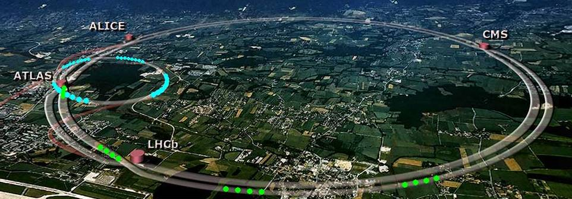

The LHC (Large Hadron Collider)

We get our data from the ATLAS detector at the Large hadron Collider in Geneva Switzerland. The LHC is a proton collider that is 27km (16 miles) in circumference and has components ranging from 50 to 175 meters underground. We put or collider underground so that particles coming from outer space get caught in the earth above it, and don’t interfere with our experiments. It accelerates bunches of protons to a center of mass energy of 13TeV and collides them at 4 points along the ring where the detectors are located, every 25 Nano-seconds. The detectors are called LHCb, ATLAS, ALICE and CMS. Once the protons are collided, they create a shower of other particles that are then deposited into the walls of our detector, where they can then be interpreted as data for us to work with. Now its important to note that most of the particles created in the collision have a very short lifetime, and decay before they reach the walls of the detector. They decay into more stable, Final state particles, that we can then use to reconstruct what created them.